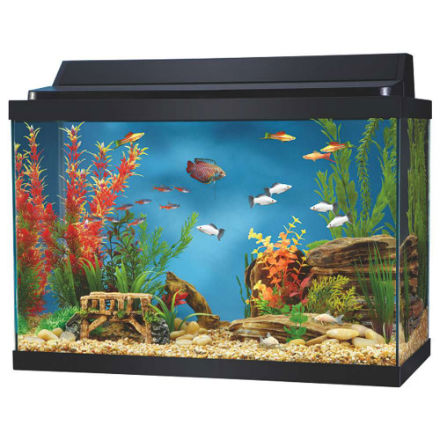
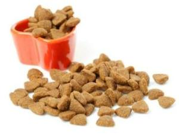
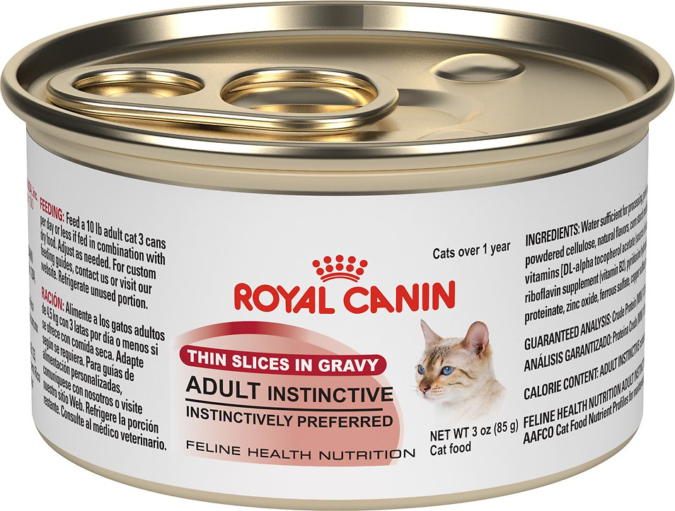
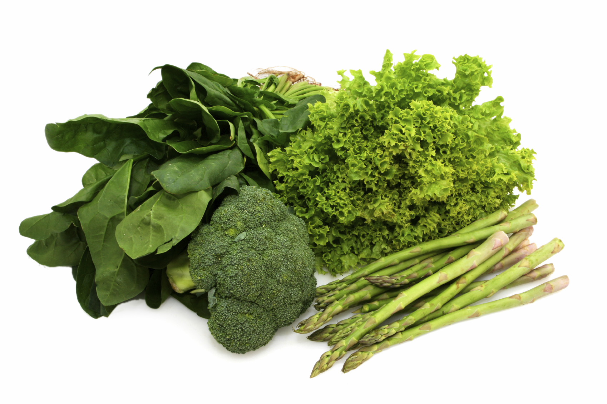

Most people choose to keep their small rodents in cages. This is convenient because food‚ water‚ and the other essential needs are all kept there. It is also easy to clean up because of the small space it occupies. If you choose to keep your pet in its cage‚ you have to remember to always keep the water and food bowl filled. It is also good for your pet if you choose to let it exercise once a day.

Turtles‚ crabs‚ and fish are all kept in aquariums. It is very important to keep your aquarium clean. You can do so by buying a filter and a type of cleaning fish. If not, you can buy a tube to suck out dirty water once or twice a week. For those who do not have a filter‚ it is a good idea to feed turtles outside of the aquarium to make the mess easier to clean up.
If you have a cat or a dog‚ chances are they live in the house and walk around like you do. If your cat goes outside‚ do not forget about it since many cats do now meow at the door. If you have a dog, it is better to get an extendable leash for the convenience of the dog. Always make sure food and water is available around the house. Do not let your pet go outside in the winter for long periods of time‚ especially cats‚ since you can't keep track of them.
Pets from the pet store are most likely more expensive than the same pet from a rescue center. The more exotic the pet‚ the more expensive. A common tabby cat from a shelter can cost 30 dollars‚ whereas a Bengal cat can cost thousands. Likewise‚ a parakeet can cost 20 dollars while a conure can cost 600.
When buying dry food for a pet‚ consider what size, brand, and ingredient would be good for yours. Buying small round pellets for a cat wouldn't be a smart idea since it's to small too bite properly and has no edges. Larger flat pellets would be a better idea. There are also types that have health benefits for pets of old age‚ teeth problems‚ and digestive problems.
Canned foods are mostly for cats and dogs and a good quality brand is very important. The quality of the food can directly relate to your pet's health. Chunky canned foods are mostly good quality because it includes meat. Loafed foods can be a mixture of unknown ingredients mixed together.
Sometimes we feed vegetables or meats to our pets. Turtles and hamsters like to eat fresh fruits and vegetables. Rabbits like to eat pellets‚ fruits and vegetables‚ and hay. If that's not enough‚ Rabbit.org has a list of even more vegetables rabbits like to eat. Cats like to eat fish‚ pork‚ and chicken. Many owners feed their dogs whatever the dogs like to eat. When feeding your pets foods like this‚ it is a good idea to look up whether it is safe or not. Chocolate can be very bad for gods, and grapes can be deadly for cats.
